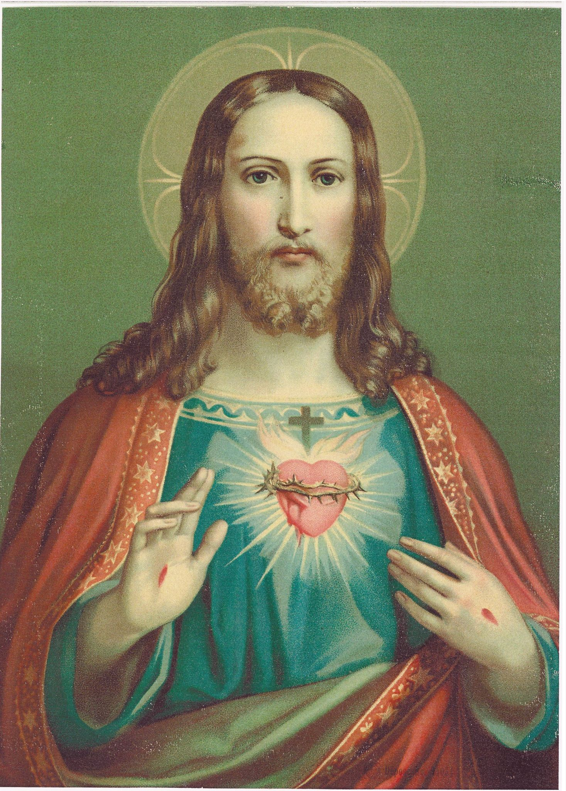
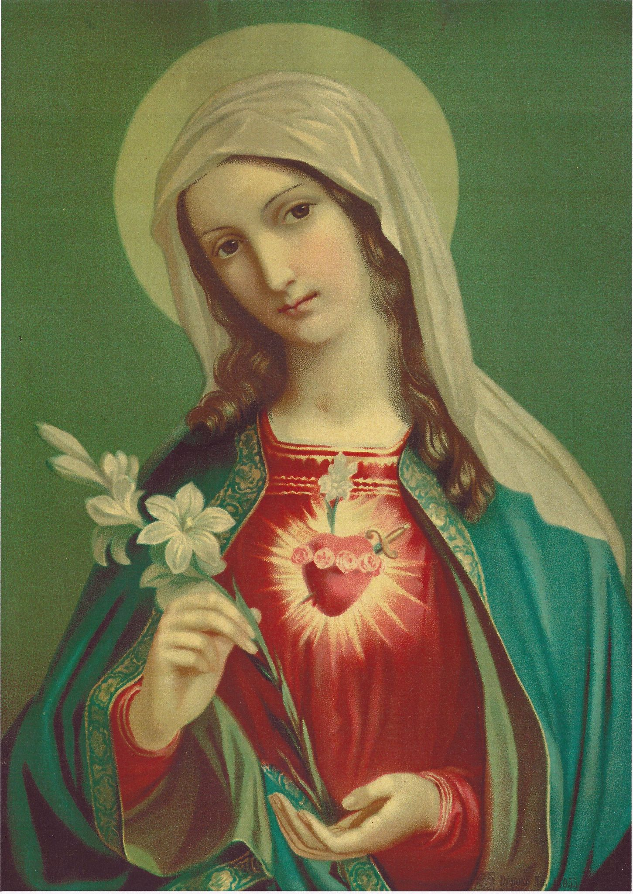
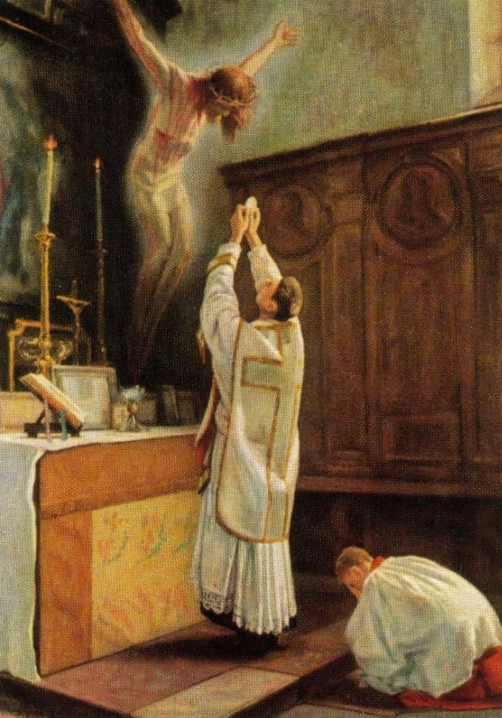

Марианское движение священников и мирян за триумф соединённых сердец Иисуса и Марии e.V.

Марианское движение священников и мирян
За триумф соединённых сердец Иисуса и Марии e.V.
Наше основанное 8 декабря 2021 года Марианское движение священников и мирян за триумф Соединённых Сердец Иисуса и Марии (MPL) ориентируется в своей духовной направленности полностью на первоначальную форму основанного св. о. Максимилианом Марией Кольбе Воинства Непорочной. Поэтому мы избрали этого великого апостола Марии и борца против всех ересей, наряду с Божией Матерью Марией, Матерью Церкви, и св. Иосифом, покровителем Церкви, особым покровителем нашего нового апостольского движения.
Цели MPL
- Мужественное исповедание истинной католической веры
- Почитание Соединённых Сердец Иисуса и Марии и содействие их триумфу во всём мире
- Подражание Святому Семейству из Назарета через жизнь в Божественной Воле, чтобы тем самым участвовать в обновлении Церкви
- Взаимное укрепление и поддержка на общем пути веры, чтобы таким образом иметь возможность противостоять великому искушению уподобиться миру и его принципам (ср. Рим 12,2; 2 Тим 4,3-5)
- Давать опору и ориентацию всем, кто находится в поиске истины
- Катехизация
- Апостольская и миссионерская работа

Победительница всех ересей
Ереси уничтожает Она, не еретиков, ибо их Она любит и желает их обращения. Именно потому, что Она их любит, Она освобождает их от ереси и уничтожает их ложные взгляды и убеждения.
(Св. о. Максимилиан М. Кольбе)
Мария хочет привести каждую душу к брачному союзу со Христом. Но Люцифер и его приспешники хотят воспрепятствовать владычеству Иисуса в душах. Его козни поэтому направлены на то, чтобы стереть имя Иисуса Христа на всей земле: он преисполнен решимости уничтожить всех, кто верит в это имя. Первая мишень его нападений — Католическая Церковь, ибо Католической Церкви Бог вверил все духовные сокровища для всего человечества. Чтобы осуществить свои замыслы разрушения, сатана особым образом использует масонство. Эта тайная секта, основанная в 1717 году, не останавливается ни перед какой жестокостью, чтобы совершенно уничтожить Католическую Церковь и всякую веру в сверхъестественный мир. Но Божия Матерь при этом не остаётся безучастной. С материнской любовью Она борется за спасение душ Своих отпавших овечек.
В 1917 году Непорочная Дева с мая по октябрь являлась трём детям-пастушкам в Фатиме, чтобы предложить последнее средство спасения: Своё Непорочное Сердце. Мария призвала к молитве и жертве за обращение грешников. Она пожелала молитвы Розария и посвящения Её Непорочному Сердцу, прежде всего посвящения России, чтобы она обратилась и не распространяла в мире свои коммунистические и левые идеи. В том же месяце, когда Непорочная через чудо солнца в Фатиме дала доказательство, что действительно Она являлась там, св. Максимилиан М. Кольбе был вдохновлён основать Воинство Непорочной. Ничего не зная о событиях в Фатиме, он стал орудием замыслов Божией Матери. Его видением было посвятить Непорочной все души во всём мире и через Марию завоевать все сердца для Иисуса. В чём была причина его пламенного рвения? Глубоко потрясённый, он 13 октября 1917 года, будучи молодым студентом в Риме, стал очевидцем масонских шествий, которые, распевая песни в честь сатаны, направлялись к Ватикану. На транспарантах он читал надпись: «Сатана будет царить в Ватикане, а Папа будет его слугой».
Он пишет: Когда масонство в Риме всё больше выходило на публику и разворачивало перед окнами Ватикана свои знамёна, на которых оно изображало св. архангела Михаила попранным и побеждённым Люцифером, и раздавало листовки, поносившие Святого Отца, возникла мысль об основании союза для борьбы против масонства и прочих слуг Люцифера.
Масонство распространяет свои идеологии через все средства массовой информации, журналы и книги. Все богохульные тенденции и программы исходят преимущественно из его мастерской. О. Кольбе был очень хорошо осведомлён: Когда мы обращаем взор вокруг себя, мы замечаем пугающее исчезновение нравственности, прежде всего среди молодёжи. Появляются союзы, поистине адские. (…) Они работают лихорадочно, согласно решениям масонов: «Мы победим Католическую Церковь не доводами, а извращением нравов!»
В XIX веке враждебные силы проникли во все сферы жизни. Они просочились в святую Церковь, чтобы распространять идеи и дух либерализма во всех его проявлениях в семинариях, высших школах и монастырях. Пропагандировалось не просто одно лжеучение, а сразу все ереси, какие только когда-либо существовали. В «модернизме» заключены все ереси. Все лжеучения, которые когда-либо нападали на Церковь и разлагали её, объединяются здесь и переходят в генеральное наступление, чтобы разрушить Церковь изнутри. Экуменизм подрывает Божественную Истину, которая единственно и исключительно была вверена Римско-католической Церкви её Основателем, самим нашим Господом Иисусом Христом.
Плоды нельзя не заметить: Католическая Церковь стремится приспособиться к другим христианским конфессиям. Заново определяют отношение религий друг к другу, как если бы все религии почитали одного и того же Бога и были путями спасения. Более двух столетий Папы предостерегали от ложных идей. Тем не менее враги занимали всё больше ключевых позиций в политике, а также в Церкви. После Второго Ватиканского Собора чуждые идеи утвердились в Риме: богословские, политические, философские, демократические идеи, совершенно чуждые существу Церкви. В её лоне они действуют как разрушительный яд. И именно в противовес всему тому, что только что было описано, св. Максимилиан М. Кольбе основал Воинство Непорочной.

Конкретные средства
Следующие пункты показывают нам, как мы можем конкретно участвовать в апостольстве ради триумфа Соединённых Сердец Иисуса и Марии:
- Укоренить собственную жизнь полностью в воле Божией и поддерживать тесную связь с Богом
- Регулярное принятие святых таинств
- Совершенное посвящение Непорочной согласно правилу MI
- Посвящение Соединённым Сердцам Иисуса и Марии
- Заместительная молитва, жертва и страдание (мы молимся особенно за Святого Отца, епископов, священников, всех посвящённых Богу и об освящении семей. Также защита жизни и обращение всех заблуждающихся и неверующих и всех врагов святой Церкви должны быть нашей особой молитвенной заботой.)
- Поддержание ежедневной молитвы Розария
- Проповедь и распространение литературы
- Распространение Чудотворного Медальона
- Дела любви
- Пожертвования